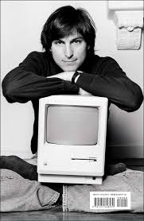
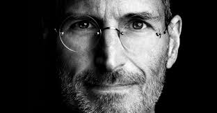
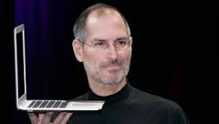
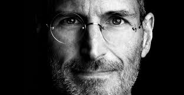
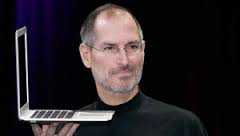

Steven Paul "Steve" Jobs February 24, 1955 – October 5, 2011) was an
American entrepreneur, businessman, inventor, and industrial designer.
He was the co-founder, chairman, and chief executive officer (CEO) of Apple Inc.;
CEO and majority shareholder of Pixara member of The Walt Disney Company's board
of directors following its acquisition of Pixar; and founder, chairman, and CEO of NeXT.
Jobs and Apple co-founder Steve Wozniak are widely recognized as pioneers of
the microcomputer revolution of the 1970s and 1980s.

Jobs was born in San Francisco and adopted at birth; he was raised in the
San Francisco Bay Area during the 1960s obs briefly attended Reed College in 1972
before dropping out.[4] He then decided to travel through India in 1974 seeking
enlightenment and studying Zen Buddhism.[5] Jobs's declassified FBI report stated
that an acquaintance knew that Jobs had used the illegal drugs marijuana and LSD while
he was in college.[6] Jobs once told a reporter that taking LSD was "one of the two or
three most important things" he did in his life.[7]
 



Jobs and Wozniak co-founded Apple in 1976 to sell Wozniak's Apple I personal computer. The visionaries gained fame and wealth a year later for the Apple II, one of the first highly successful mass-produced personal computers. In 1979, after a tour of PARC, Jobs saw the commercial potential of the Xerox Alto, which was mouse-driven and had a graphical user interface (GUI). This led to development of the unsuccessful Apple Lisa in 1983, followed by the breakthrough Macintosh in 1984. In addition to being the first mass-produced computer with a GUI, the Macintosh introduced the sudden rise of the desktop publishing industry in 1985 with the addition of the Apple LaserWriter, the first laser printer to feature vector graphics. Following a long power struggle, Jobs was forced out of Apple in 1985.
Just listen, and relax